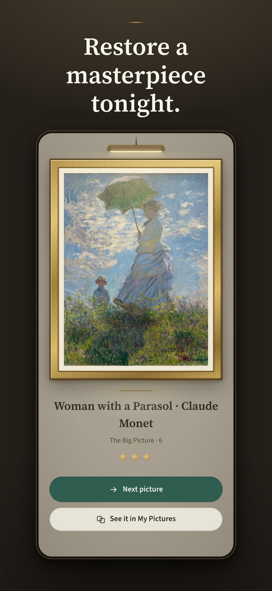
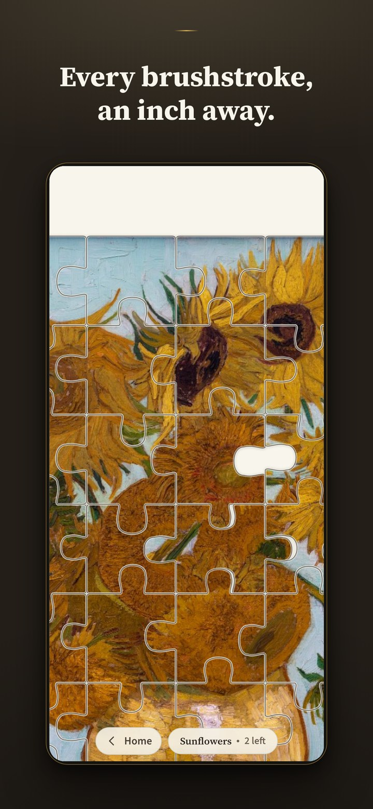
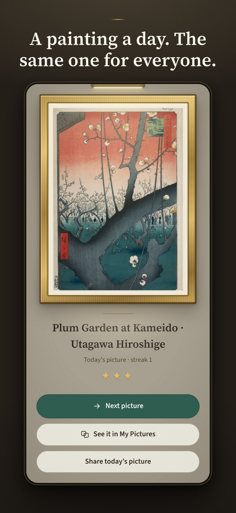

Restore the world’s most beloved paintings, one quiet evening at a time.
Now available for free on the App Store →Vermeer, Monet, Hokusai, Van Gogh, Hiroshige — masterpieces from the world’s public-domain collections, presented the way a museum would hang them. Every painting you restore stays in your gallery, with a plaque to say what you’ve done.
The pieces are already in place — you simply turn them until the picture comes back. The whole game is playable with one thumb, at your pace, because no one should need steady hands or sharp eyes to enjoy a Vermeer.
Tonight’s painting is the same for everyone on Earth. Solve it, earn your stars, and share tonight’s restoration with someone. A new exhibition hangs on the first of every month.
Closer than a museum lets you stand
In a gallery you see a Van Gogh from six feet back, behind glass, with somewhere else to be. Here you work an inch from the canvas — close enough to follow every brushstroke he laid down — for as long as you like. Nobody asks you to move along.



Lamplight is a one-tap restoration puzzle built on the world’s public-domain masterpieces, made by a solo developer — and built deliberately for the hands and eyes the industry ignores: no dragging, no timers, larger pieces and stronger outlines a setting away. No accounts, no tracking, no coins. The images on this page may be used freely in coverage.